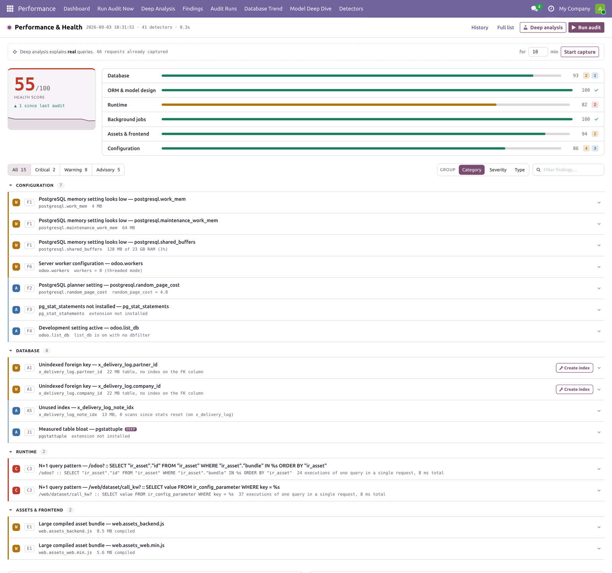
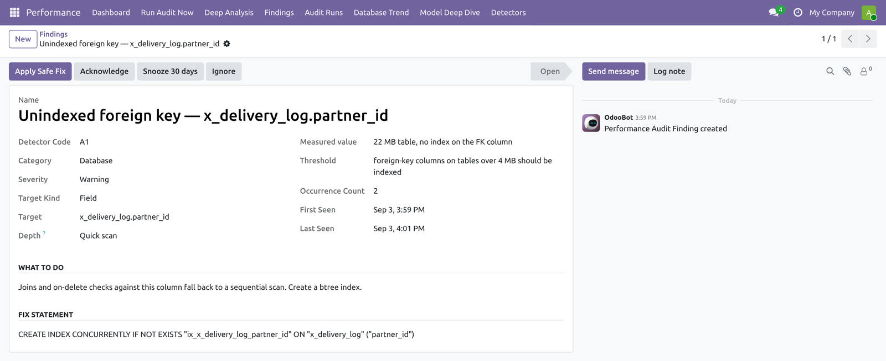
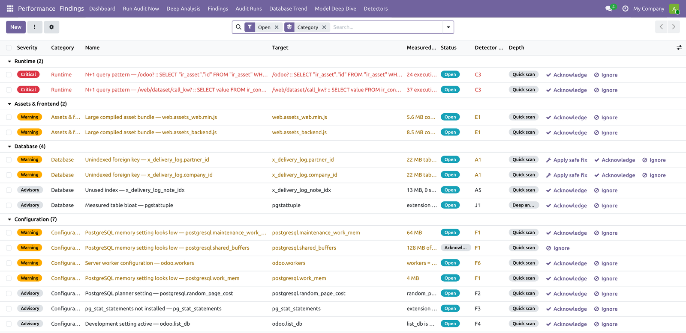
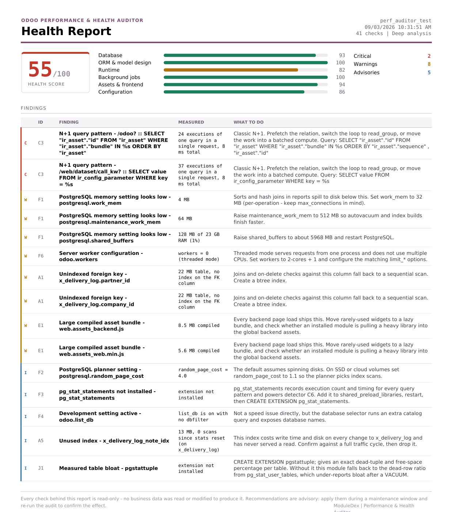
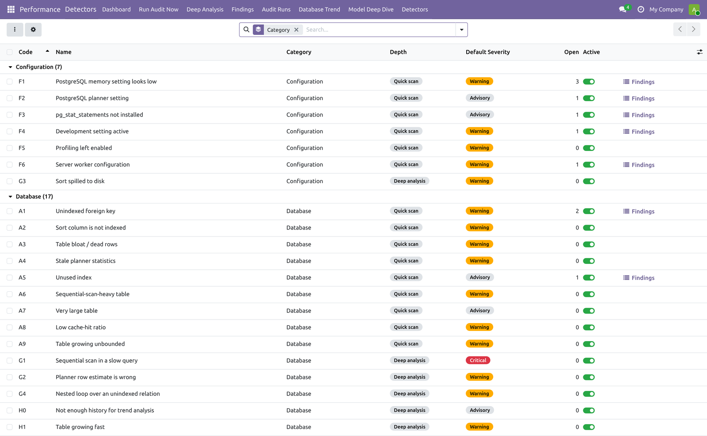
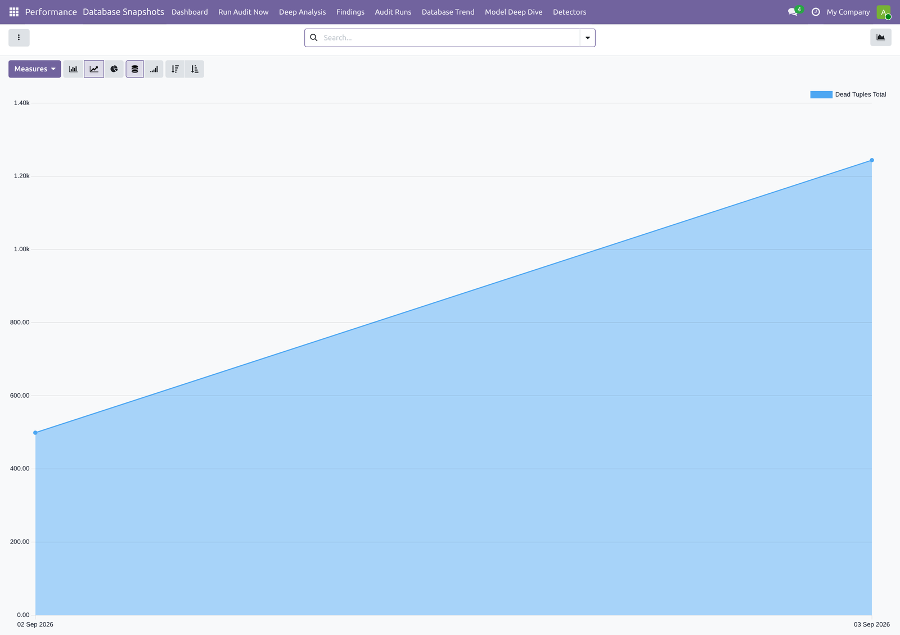

41 read-only checks across PostgreSQL, the ORM, the cron queue and your server
configuration. Every finding carries the measured value, the threshold it broke,
and the exact statement that fixes it.
“Odoo is slow” is not a diagnosis.
The usual answers — add RAM, add workers, blame the network — are guesses.
This module measures instead: it reads the PostgreSQL catalogue, walks the ORM registry,
inspects the scheduled-action queue and your server settings, and turns what it finds into
a ranked list you can actually work through.
- Every finding is evidence-backed.
Not “this table is big” but “22 MB table, no index on the FK column”
next to the threshold it broke.
- A 0–100 health score, weighted by
severity and broken down across six areas, so you can see whether last month's work helped.
- It stays quiet about core. ORM checks are limited to your own
modules — it will not lecture you about
mail.thread.

The dashboard. Health score with trend, per-category
breakdown, and every finding grouped, filterable and actionable in place.
Two speeds
QUICK SCAN · ~0.1s
Safe on production, any time
Catalogue queries, registry analysis and configuration checks. Nothing is locked and
nothing is written, so it is safe to run during business hours — and a weekly
scheduled action does it for you.
DEEP ANALYSIS · FROM YOUR TRAFFIC
It watched the planner refuse the index
Capture live requests for a few minutes. The auditor replays the slow statements under
EXPLAIN (ANALYZE, BUFFERS) and reads the plan, so it names the exact index
to create — because it saw the sequential scan, not because it guessed.

One finding, in full. The measured value, the threshold it
broke, what to do about it, and the exact statement — with Apply
Safe Fix when it is one of the three that can be run from the interface.
What it looks at
A1–A9 · J1–J2 DATABASE
Unindexed foreign keys and sort
columns · dead-row bloat · stale planner statistics · unused indexes
· sequential-scan-heavy tables · cache hit ratio · measured bloat via
pgstattuple.
B1–B7 ORM & MODEL DESIGN
Models sorting on a computed field
· computed fields with no dependencies · non-stored related fields in list
views · create() overrides that are not batch-safe · deep
view-inheritance chains.
C0–C6 RUNTIME
N+1 query patterns caught in real
requests · slow routes · the queries that dominate your traffic, ranked by
total time rather than by worst case.
G0–G4 QUERY PLANS (DEEP)
Sequential scans inside slow
statements · planner row estimates that are wrong · sorts spilling to disk
· nested loops hammering an unindexed relation.
D2–D6 BACKGROUND JOBS
Scheduled actions that cannot finish
before they are due again, and the ones Odoo silently disabled after five failures without
telling anybody.
F1–F6 · E1–E2 CONFIG & ASSETS
PostgreSQL memory and planner
settings measured against your actual RAM · worker configuration · development
flags left on in production · oversized compiled asset bundles.

Findings persist between runs. They keep their history, so you
can acknowledge, snooze or ignore one and it stays that way — and anything you fixed
resolves itself on the next audit.
It reads. It does not write.
Read-only by construction.
- No business data is touched, ever.
Every check is a catalogue query, a registry walk or a settings lookup.
- Exactly three statements can be applied
from the interface — ANALYZE, VACUUM and CREATE INDEX CONCURRENTLY. Each is matched
against a full-statement allow-list, run on a separate connection, logged to the finding,
and restricted to Settings administrators.
- Everything else is shown as text
for you to review and run yourself.
- Slow statements are replayed inside a savepoint with a
statement timeout, and only when they are pure reads.
The things you hand to a client
- Health Report PDF. Score,
category breakdown and every open finding with its recommendation — the document
you send after an audit.
- Model Deep Dive. Pick one model
and get its storage, scan counts, every index with its usage, unindexed foreign keys, and
which writes trigger which recomputes.
- Database trend. Nightly
snapshots of size, dead tuples and scan counts, so growth is measured rather than
remembered.
- Tunable detectors. All 41 are
records: change a threshold, disable one that does not apply to your instance.
- Weekly audit with alerting. Emails whoever you nominate
— but only when something new appears.

Health Report. Self-contained and printable.

Every check is a record you can tune. Thresholds, severity and
whether it runs at all — because a 40 GB instance and a 400 MB one do not deserve the
same warnings.

Growth is a finding too. A weekly snapshot of table and index
size turns “it feels slower than last quarter” into a number you can show a client.
What it needs
Odoo 19
Community or Enterprise. Self-hosted, or Odoo.sh.
Optional PostgreSQL extensions
pg_stat_statements,
pgstattuple and hypopg unlock extra depth. Without them, those
checks say so and the rest carries on.
Managed hosting
Where the database user is not a
superuser, server-level checks degrade to advice rather than failing.
ModuleDex
Odoo Performance Auditor